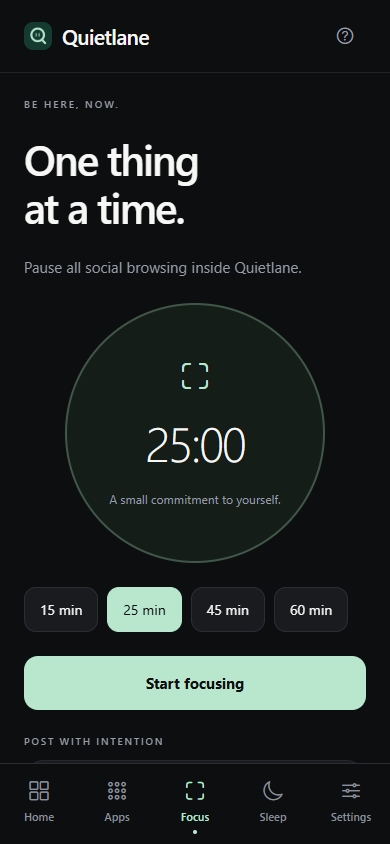
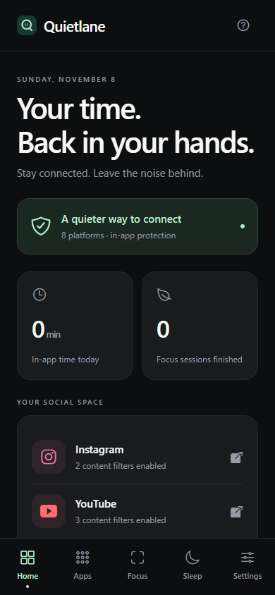

OPEN SOURCE · IOS & ANDROID
Stay connected.
Skip the scroll.
Quietlane gives you a place to check messages and open the links friends send, with filters for distracting feeds and time limits you control.
No Quietlane account needed.


INSIDE QUIETLANE
Make room for
what you came for.
Use Quietlane’s built-in browser to choose which parts of social sites you want to see.
- 01
Keep the conversation
On Instagram, block Reels, Explore, and the home feed while keeping messages available. Open a single reel shared in a message without unlocking the scrolling feed.
- 02
Make time to focus
Start a focus session to pause social browsing in Quietlane, or set daily time limits for the sites you use.
- 03
Wind down on schedule
Choose your sleep hours and days. Quietlane pauses in-app social browsing during that window.
GET QUIETLANE
Start with
the source.
Download the MIT-licensed project and run it on iOS or Android with Expo Go.
Download source ZIPInstallable app binaries are not available yet.
Run it on your phone
- Install Node.js 22.18 or newer and an Expo Go version compatible with Expo SDK 58.
- Unzip the download, open a terminal in the extracted project folder, and run:
cd mobile
npm ci
npx expo start --goConnect your phone and computer to the same Wi-Fi, then scan the QR code with Expo Go on Android or Camera on iOS.
View setup on GitHub ↗